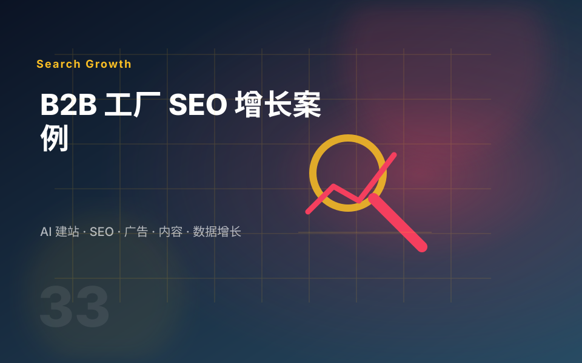

SEO
面向 Google 等传统搜索引擎，优化关键词、页面结构、技术基础、内容集群和内链，持续扩大自然搜索覆盖。
三类入口服务不同的搜索场景，但最终都要让目标客户进入正确页面，获得足够信息，并完成询价、索样、下载资料或联系销售。
面向 Google 等传统搜索引擎，优化关键词、页面结构、技术基础、内容集群和内链，持续扩大自然搜索覆盖。
围绕品牌实体、行业资料、对比内容和可信来源，提高品牌在生成式 AI 回答中被理解、引用或提及的机会。
通过 FAQ、定义、步骤、列表、结构化数据和清晰摘要，让页面更容易承接问题型搜索和直接答案。

“内容单元”可以是新文章、产品页、行业解决方案页、FAQ 扩展或已有页面的深度更新，具体组合根据当月优先级确认。
网站健康度、竞争对手、目标客户、采购决策链、关键词机会、页面缺口和季度路线图。
产品页、行业页、场景页、FAQ、采购指南、对比内容、旧内容更新与站内链接建设。
检查标题、Meta、URL、站点地图、Canonical、结构化数据、404、速度和移动端体验。
优化 CTA、表单、下载资料、内容到产品页路径，并追踪邮箱、WhatsApp、表单等转化事件。
抽查重点问题中的品牌与竞品表现，优化问题型内容、可信信息和可引用的页面结构。
说明完成事项、数据来源、变化原因、问题机会、下月动作和需要客户配合的资料。
页面不展示固定价格。诊断后再根据关键词范围、内容单元、页面优化、技术实施和数据追踪要求确认具体方案。
适合自然流量刚起步，希望先建立基础检查和固定发布节奏的企业。
适合网站基础较弱，需要持续建立 SEO 页面、内容和数据基线的企业。
适合已有网站和内容基础，希望系统推进 SEO、GEO、AEO 与询盘增长的企业。
适合客单价较高、竞争较强，希望把自然流量做成核心获客渠道的企业。
自然流量不是广告式即时结果。我们会把不同阶段应该完成的工作和应该观察的指标分开，避免用单月波动判断长期项目。
完成业务梳理、网站审计、关键词与页面映射、追踪检查和未来执行计划。
优化核心页面，建立 FAQ、内链和首批内容，观察收录与搜索曝光。
按主题集群扩展行业页、场景页和对比内容，根据排名与点击调整重点。
更新高潜力页面，强化可信信息，并结合销售反馈优化询盘质量。
资料不完整可以先做诊断，但产品事实、参数、案例、认证和合规表述仍需客户确认。
建议准备官网地址、主营产品、目标行业和地区、主要竞争对手、产品资料、常见销售问题，以及 GSC、GA4 或表单数据。
可以先从产品事实、工厂能力、质量控制、认证、采购问题和公开资料开始，但不会虚构客户案例或结果数据。
网站重构、复杂页面设计、程序开发、多语言翻译、批量产品上传、付费媒体、外链采购、拍摄和第三方工具费用需要单独确认。
结合关键词可见度、目标地区流量、重点页面表现、内容收录、表单与联系点击、合格线索和销售反馈综合判断，而不是只看总访问量。
发送当前网站、核心产品、目标国家和主要竞争对手，我们会先梳理网站基础、页面缺口、自然流量机会和需要补充的资料。